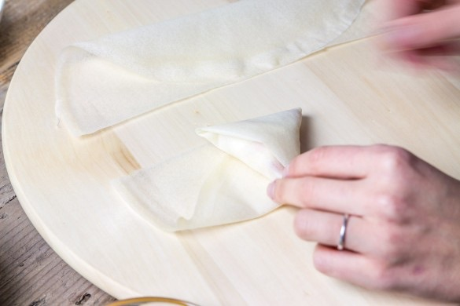

Samoussas de légumes à l’Indienne

Hello les gourmands ♥! Aujourd’hui c’est avec cette petite recette de samoussas aux légumes que l’on se retrouve, parfait pour un apéro entre amis, en entrée ou en plat accompagné d’une salade.
On n’y pense pas assez souvent mais les samoussas c’est un peu la recette facile, rapide et qui plait généralement à tout le monde. Le très gros avantage des recettes de samoussas c’est que l’on peut y mettre un peu tout ce que l’on a envie! Pour cette nouvelle version j’ai décidé d’y mettre des légumes pour faire des samoussas à l’indienne avec des épices comme le curry et le curcuma.
J’ai fait et testé pas mal de recette avant de choisir celle-ci. J’ai choisi de mettre de la courgette plutôt que des petits pois car c’était encore la pleine saison de la courgette mais vous pouvez switcher ces deux ingrédients entre eux sans problème (les vrais samoussas à l’indienne ne contiennent pas de courgettes c’est pourquoi je fais cette petite précision). Rien de très compliqué dans cette recette (si ce n’est le pliage si vous n’avez pas l’habitude mais une fois le premier samoussa plié, ça va tout seul!!)
Vous me direz ce que vous en pensez si vous tentez la recette (et si vous avez des variantes n’hésitez pas à les laisser en comms!)
Et pour les gourmands qui souhaiteraient d’autres recettes de samoussas je vous donne rendez-vous ici : recettes de samoussas ♥
Ingrédients
- Feuilles de Brick - 8
- Pomme de terre ou patate douce - 1 (environ 100-150g epuchée)
- Oignon - 1
- Carotte - 1
- Courgette - 1/4 - 1/2 (environ 80-100g)
- Huile d'olive - 1 filet + pour dorer
- Curry - 1 càc
- Curcuma - 1 càc
- Poivre noir
- Sel
- Coriandre ciselée - 1 càs
- Cumin - 1 càc
Instructions
- Faites cuire la pomme de terre dans de l'eau bouillante ou à la vapeur c'est comme vous voulez
- Une fois la pomme de terre cuite, coupez la en petits morceaux
- Dans une poêle, faites suer l'oignon avec un filet d'huile d'olive
- Épluchez et coupez vos légumes en petits dès
- Ajoutez les légumes dans la poêle et poursuivre la cuisson 8-10 minutes
- Ajouter les épices puis les morceaux de pommes de terre en fin de cuisson
- Personnellement j’écrase grossièrement,t le mélange pour obtenir une sorte de pâte (attention je ne fais pas une purée, j’écrase juste un peu la pomme de terre pour que tous les ingrédients tiennent entre eux, c'est beaucoup plus facile pour le montage des samoussas)
- Préchauffez le four à 180°C.
- Coupez les feuilles brick en deux et procédez au pliage des samoussas comme ceci (attention les photos sont celles de la recette des samoussas poire coppa réalisés il y a longtemps sur le blog!)
- Une fois tous les samoussas formés, disposez-les sur une plaque recouverte de papier cuisson et badigeonnez-les d'un peu d'huile d'olive à l'aide d'un pinceau
- Enfourner 15 minutes en surveillant la cuisson
- Les samoussas doivent être bien dorés
- A consommer chaud/tiède accompagné d'une sauce pimentée aux poivrons ou à la tomate
- A vous de jouer!!





Les tips de la communauté
Recette très populaire avec majoritairement des retours positifs. Bien reçue pour les influences asiatiques et indiennes, bien que l'un des lecteurs l'ait trouvée trop fade en épices.
Astuces
- Doser le curry avec parcimonie pour qu'il ne domine pas les autres saveurs
- Les explications de pliage sont appréciées et utiles
- Possible d'utiliser des feuilles de riz pour un résultat similaire
- Complémenter avec du blanc de poulet pour plus de substance
Variantes suggérées
- Remplacer les feuilles de pâte par des feuilles de riz (similaire aux rouleaux de printemps)
- Ajouter du blanc de poulet
- Adapter les légumes selon ce qu'on a à disposition (courgette par exemple)
Ajustements signalés
- Augmenter les épices si on les aime davantage, car la recette peut sembler fade à certains